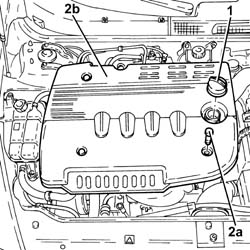
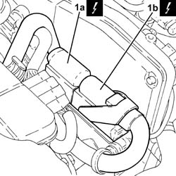
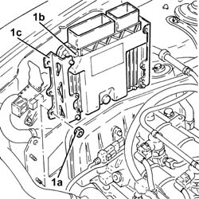

1060G80 DS ELECTRIC INJECTION CONTROL UNIT - R R
- Path
- Procedures > 10 ENGINE UNIT > 1060 DIESEL INJECTION SYSTEM > 1060G PRESSURE PUMP ELECTRIC CONTROL > 1060G80 DS ELECTRIC INJECTION CONTROL UNIT - R R
- Kind
- repair procedure (removal / refitting; the operation number is the code)
- Applies to
- engines: 1.9 JTD 16V; all production periods
- Interactive page
- https://sloeber94.github.io/elrnDB-aGt/en/#/125001061
Applies to: engines: 1.9 JTD 16V; all production periods
 Removing
Removing
 Refitting
RefittingEnsure that the ignition key is in the OFF position, then disconnect the negative battery terminal (-).
Name | Connector | |
|---|---|---|
- | Battery | See A1B BATTERY ( BATTERY NEGATIVE ) |
1. Remove the engine oil filler cap.
2. Undo the fixing bolts (2a) and remove soundproofing cover (2b).
Tighten the engine oil filler cap.

Applies to: engines: 1.9 JTD 16V; all production periods
1. Disconnect the electrical connections (1a) and (1b) from the diesel electronic injection system control unit.
Name | Connector | |
|---|---|---|
1a | Engine management control unit | See M10A ENGINE MANAGEMENT CONTROL UNIT ( FRONT ) |
Name | Connector | |
|---|---|---|
1b | Engine management control unit | See M10B ENGINE MANAGEMENT CONTROL UNIT ( CONNECTORS ) |

Applies to: engines: 1.9 JTD 16V; all production periods
1. Undo the nuts (1a) and remove the diesel electronic injection system control unit (1b) complete with slides (1c).

Applies to: engines: 1.9 JTD 16V; all production periods
Refitting
RemovingPlace the diesel electronic injection control unit complete with slides back in its housing with its bracket and secure it using the nuts.
Connect the electrical connections to the diesel electronic injection control unit.
Remove the engine oil filler cap.
Place the soundproof cover back in its housing and secure using the relevant bolts.
Tighten the engine oil filler cap.
Connect the negative (-) battery terminal
Topics that link to this page (41)
- B13 ENGINE STARTS WITH DIFFICULTY'
- B20 ENGINE STARTS, AND CUTS OUT STRAIGHT AWAY
- D03 ENGINE NOT RUNNING SMOOTHLY / (IRREGULAR OPERATION)
- D04 ENGINE NOT RUNNING SMOOTHLY
- D10 ENGINE IDLE IRREGULAR
- D70 CRUISE CONTROL NOT WORKING UNDER ANY CONDITIONS
- D71 CRUISE CONTROL RECALL CONTROL NOT WORKING
- D72 CRUISE CONTROL SET+ CONTROL NOT WORKING
- D73 CRUISE CONTROL DOES NOT GO OFF WHEN THE CLUTCH PEDAL IS PRESSED
- D74 CRUISE CONTROL SYSTEM DOES NOT GO OFF WHEN BRAKE PEDAL PRESSED
- D75 THE CRUISE CONTROL SET- CONTROL IS NOT WORKING
- K25 ENGINE COOLANT TEMPERATURE GAUGE NOT WORKING
- K26 ENGINE COOLANT OVERHEATING WARNING LIGHT NOT WORKING
- K27 ENGINE COOLANT OVERHEATING SIGNALLED BY THE INSTRUMENT
- K29 ENGINE COOLANT OVERHEATING SIGNALLED BY INSTRUMENT - WITH VAPOURS VISIBLE
- K47 MILOMETER/TRIP METER FLASHING
- K52 CODE FAILURE WARNING LIGHT ON
- K100 MIL WARNING LIGHT DOES NOT WORK
- K101 M.I.L WARNING LIGHT STAYS ON / ENGINE STARTS
- K123 WATER IN DIESEL FILTER WARNING LIGHT ON CONSTANTLY
- K124 HEATER PLUGS WARNING LIGHT ON CONSTANTLY
- 0510A10 CYLINDER COMPRESSION - CHECK FOR LOOSE SPARK PLUGS OR INJECTORS
- 1016C10 SINGLE CYLINDER HEAD, REMOVED - OVERHAUL
- 1020D14 FRONT CRANK SHAFT OIL SEAL COVER - R + R AND REPLACE SEALS FOR VERSIONS WITH OIL PUMP ON CRANK SHAFT, TIMING SIDE
- 1020D18 FRONT CRANK SHAFT COVER OIL SEAL - REPLACE
- 1028H10 PISTON WITH CONNECTING ROD - R R
- 1032B10 TOOTHED TIMING BELT - R + R FOR TIMING ADJUSTMENT OR REPLACEMENT
- 1032B46 TOOTHED DRIVE PULLEY - R + R
- 1032B52 TOOTHED DRIVEN PULLEY (ONE) - R + R
- 1032C18 MOBILE TIMING SYSTEM TENSIONER - R + R FOR 24 VALVE ENGINES
- 1032C32 FIXED TIMING SYSTEM TENSIONER (ONE) R + R
- 1032D12 TIMING SYSTEM PROTECTIVE COVER(S) - R + R
- 1036L10 CAMSHAFTS IN CYLINDER HEAD EXTENSION - R R - INCLUDES CYLINDER HEAD EXTENSION REPLACEMENT IF NECESSARY
- 1036L30 FRONT OIL SEAL OF INTAKE CAMSHAFT IN CYLINDER HEAD EXTENSION REPLACE
- 1060E10 PRESSURE PUMP - R R
- 1060E30 PRESSURE PUMP PULLEY - R R
- 1060E40 SUPPLEMENTARY PRESSURE PUMP - R R
- 1072B10 INLET MANIFOLD - R + R AND REPLACE SEAL
- 1088C10 WATER PUMP - R + R
- 4130B32 POWER STEERING PUMP MOUNT - R R
- 5040A76 TANDEM PIPE FOR DELIVERY AND RETURN FROM EVAPORATOR RR